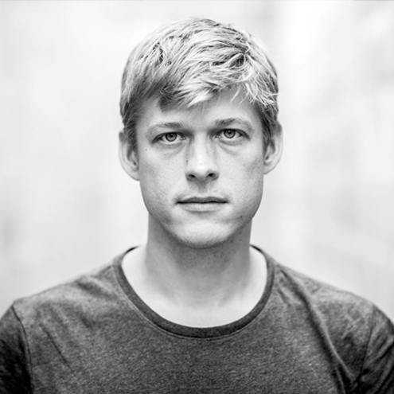

Count Zero Three borrows its name from William Gibson's 1986 novel, in which an orphaned AI drifts through the wreckage of its corporate home, building Cornell boxes out of the debris.

Peter Burr is an artist from Brooklyn, NY who transforms complex computational systems into emotional,
sensory experiences through large-scale immersive environments. Drawing from early experiments with
computational graphics in the mid-nineties, Burr's practice has evolved to incorporate techniques that
merge fundamental computing operations with modern real-time rendering systems. His work frequently
explores the relationship between human-machine interfaces and the underlying systems that drive them.
Previously Burr worked under the alias Hooliganship and founded the video label Cartune Xprez through
which he produced hundreds of live multimedia exhibitions and touring programs showcasing a
multi-generational group of artists at the forefront of experimental animation. His practice has been
recognized through grants and awards including a Guggenheim Fellowship, a Creative Capital Grant, and a
Sundance New Frontier Fellowship. His work has been presented at major cultural institutions including
the Museum of Modern Art, The Barbican Centre, Documenta 14, the Whitney Museum of American Art, and the
Centre Pompidou.
Throughout his career, Burr has maintained an active presence in the computational arts field, with
exhibitions in over 25 countries. He regularly presents his research at institutions including past
keynotes at Yale University and Ars Electronica. He is a current PhD candidate in video games at
Rensselaer Polytechnic Institute.